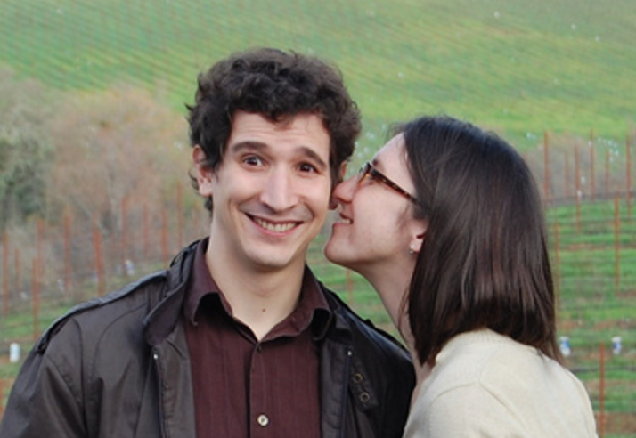
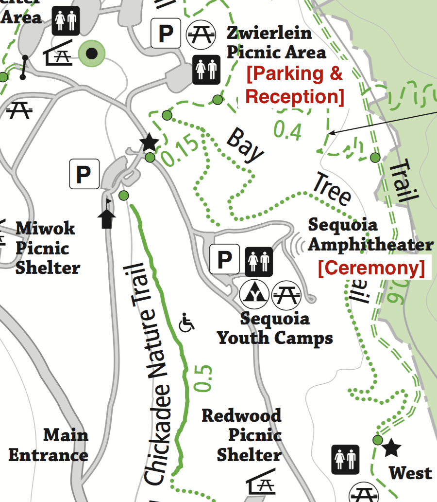

Brian & Isabelle Get Married
When?
Saturday, July 23, 2016
Where?
Main Event:
Huddart Park
1100 Kings Mountain Rd
Woodside, CA 94062
[Official website]
[Google Maps]
[Brochure Map]
Afterparty:
????
Redwood City, CA 94061
[Google Maps]
Who?
These two: 

Itinerary
You can find more details and advice here, but our plan for the day looks like:
| What | When | Where | |
|---|---|---|---|
| Assembly | 3:00 | Sequoia Amphitheater Picnic Area | Meet & mingle with your fellow guests. Light refreshments and some snacks as anticipation grows and crackles. |
| Ceremony | 3:30 | Sequoia Amphitheater | A few words and an exchange of vows. |
| Nature Walk | 4:00 | From Sequoia Amphitheater to Zwierlein Picnic Area | Low-key hike on a nature trail through some redwoods, from the ceremony to the reception. Should take about ten minutes, and a shuttle will be available on request. |
| Reception | 4:30-8:00 | Zwierlein Picnic Area | Celebration in the redwoods with a Greek buffett and picnic seating. Maybe some more kind words. Definitely horseshoes, bocce, and badminton. |
| Afterparty | 8:30-sleep | ???, Redwood City, CA 94061 | We've rented a small bungalow (the groomsmen all used it to prep), and we're inviting you over to hang out. |
Click here for more details about parking, cuisine, and fun.
Getting There
Take Interstate 280 to the exit for Woodside Rd. Go west on Woodside for just over a mile and a half, then turn right onto Kings Mountain Road. Follow Kings Mountain for a few more miles until you reach the main entrance of the park, at a large sign.
Head straight past the ranger station towards the Zwierlein picnic area. Park there, then walk back around to the Sequoia Amphitheater to find a staging area before everyone takes a seat. The rangers tell us parking can be tight and suggest carpooling if possible.
Here's a zoomed version of the above brochure map, with some annotations
in red:

Registry
Brian & Isabelle are pretty well set for the traditional registry items, so we've skipped setting one up. If you'd like to commemorate the wedding with a gift, we'd be happy with a charitable donation to a cause you feel is worthy. Here are a few we like:
Lodging & Travel
We have a small block of rooms set aside at the Crowne Plaza Palo Alto. They're available for reservation on Thursday, Friday, Saturday and Sunday nights. You book a slot either at the previous link, or by calling 650-857-0787. The code to use for our block-deal is GW1 (that's "G"olf, "W"hiskey, One). It cost around $120 for Friday or Saturday night, and $190 for Thursday or Sunday night.
The nearest, most convenient airport for flying in is and will be San Francisco International Airport, SFO. (Oakland Airport and San Jose are pretty good, too, just maybe an extra hour of ground travel.)
What to Wear
Attire is dressy casual. The reception area is a wooded park, so we'd advise flats or wedges for footwear. We expect the temperature to reach a high of 80 degrees.
The wedding party will be dressed in shades of blue, from to just straight up blue.